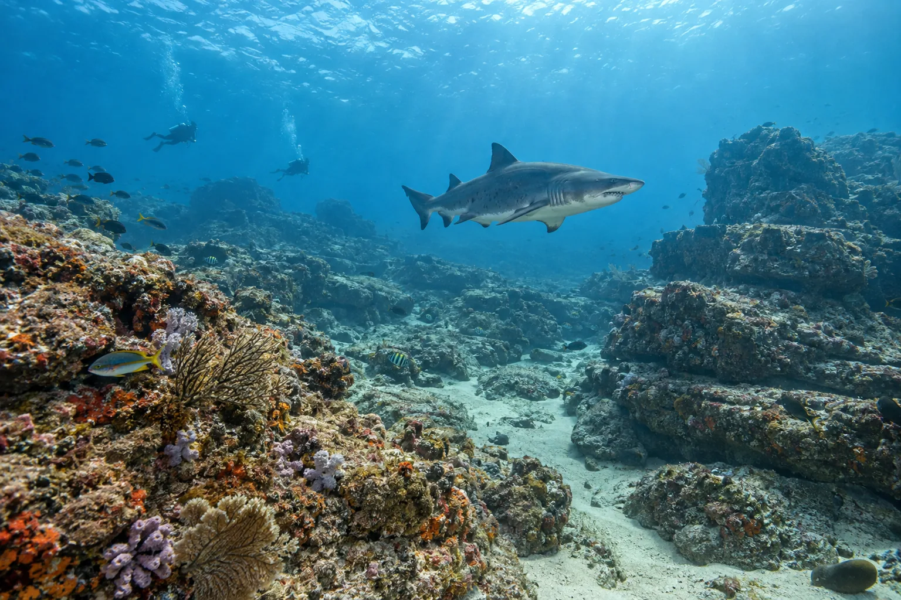

Aliwal Shoal
KwaZulu-Natal, Afrique du Sud · plongée

Ancienne dune fossile devenue récif, célèbre pour ses requins-taureaux en saison. Deux épaves complètent le site.
- Lieu
- KwaZulu-Natal, Afrique du Sud
- Niveau
- Intermédiaire
- Activités
- plongée
- Type d'eau
- Mer / océan
- Coordonnées
- -30.25, 30.83 (position approximative du secteur)
Dangers à connaître
- Mise à l’eau à travers les vagues.
- Grands requins : suis le briefing.
Le conseil d'Ocean Buddy
Plonge avec un opérateur agréé : la mise à l’eau se fait depuis la plage en semi-rigide.
Ouvrir dans Ocean Buddy Télécharger sur l'App Store
Source : Fiche Ocean Buddy · septembre 2026 · à vérifier localement.